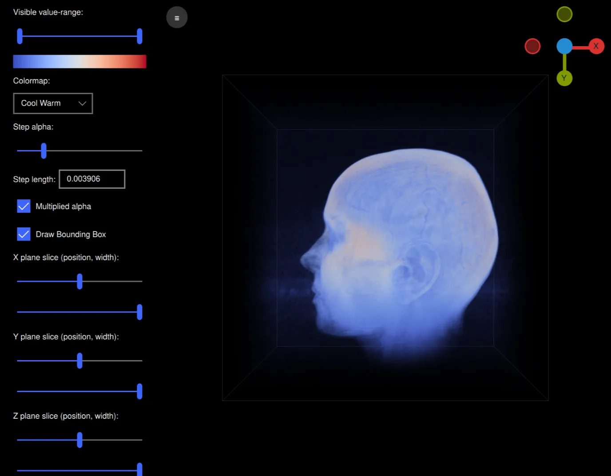

Qt Quick 3D - Volumetric Rendering Example
Demonstrates how to do volumetric rendering in Qt Quick 3D.

Introduction
This example demonstrates how to do volumetric rendering using a custom shader and a 3D volume texture with a technique called Volume ray casting. This example is an application that can read raw volume files and render them while being able to interactively modify various rendering settings such as the colormap, alpha and slice planes used. It is designed to work well with the volumes hosted at https://klacansky.com/open-scivis-datasets/ and automatically set the correct dimensions and scaling.
Implementation
The application is using QML and is a ApplicationWindow with a View3D containing the volume and a ScrollView containing the settings. To render our volume we create a scene in our View3D object with just a cube model in the middle.
Model { id: cubeModel source: "#Cube" visible: true materials: CustomMaterial { shadingMode: CustomMaterial.Unshaded vertexShader: "alpha_blending.vert" fragmentShader: "alpha_blending.frag" property TextureInput volume: TextureInput { texture: Texture { textureData: VolumeTextureData { id: volumeTextureData source: "file:///default_colormap" dataType: dataTypeComboBox.currentText ? dataTypeComboBox.currentText : "uint8" width: parseInt(dataWidth.text) height: parseInt(dataHeight.text) depth: parseInt(dataDepth.text) } minFilter: Texture.Nearest mipFilter: Texture.None magFilter: Texture.Nearest tilingModeHorizontal: Texture.ClampToEdge tilingModeVertical: Texture.ClampToEdge //tilingModeDepth: Texture.ClampToEdge // Qt 6.7 } } property TextureInput colormap: TextureInput { enabled: true texture: Texture { id: colormapTexture tilingModeHorizontal: Texture.ClampToEdge source: getColormapSource(colormapCombo.currentIndex) } } property real stepLength: Math.max(0.0001, parseFloat( stepLengthText.text, 1 / cubeModel.maxSide)) property real minSide: 1 / cubeModel.minSide property real stepAlpha: stepAlphaSlider.value property bool multipliedAlpha: multipliedAlphaBox.checked property real tMin: tSlider.first.value property real tMax: tSlider.second.value property vector3d sliceMin: sliceSliderMin( xSliceSlider.value, xSliceWidthSlider.value, ySliceSlider.value, ySliceWidthSlider.value, zSliceSlider.value, zSliceWidthSlider.value) property vector3d sliceMax: sliceSliderMax( xSliceSlider.value, xSliceWidthSlider.value, ySliceSlider.value, ySliceWidthSlider.value, zSliceSlider.value, zSliceWidthSlider.value) sourceBlend: CustomMaterial.SrcAlpha destinationBlend: CustomMaterial.OneMinusSrcAlpha } property real maxSide: Math.max(parseInt(dataWidth.text), parseInt(dataHeight.text), parseInt(dataDepth.text)) property real minSide: Math.min(parseInt(dataWidth.text), parseInt(dataHeight.text), parseInt(dataDepth.text)) scale: Qt.vector3d(parseFloat(scaleWidth.text), parseFloat(scaleHeight.text), parseFloat(scaleDepth.text)) Model { visible: drawBoundingBox.checked geometry: LineBoxGeometry {} materials: DefaultMaterial { diffuseColor: "#323232" lighting: DefaultMaterial.NoLighting } receivesShadows: false castsShadows: false } Model { visible: drawBoundingBox.checked geometry: LineBoxGeometry {} materials: DefaultMaterial { diffuseColor: "#323232" lighting: DefaultMaterial.NoLighting } receivesShadows: false castsShadows: false position: sliceBoxPosition(xSliceSlider.value, ySliceSlider.value, zSliceSlider.value, xSliceWidthSlider.value, ySliceWidthSlider.value, zSliceWidthSlider.value) scale: Qt.vector3d(xSliceWidthSlider.value, ySliceWidthSlider.value, zSliceWidthSlider.value) } }
This cube is using a custom shader with a 3D texture for the volume and an image texture for the colormap. There are also various properties for the transfer function, slice planes etc. The volume texture's textureData is a custom QML type called VolumeTextureData and is defined in volumetexturedata.cpp and volumetexturedata.h.
property TextureInput volume: TextureInput { texture: Texture { textureData: VolumeTextureData { id: volumeTextureData source: "file:///default_colormap" dataType: dataTypeComboBox.currentText ? dataTypeComboBox.currentText : "uint8" width: parseInt(dataWidth.text) height: parseInt(dataHeight.text) depth: parseInt(dataDepth.text) } minFilter: Texture.Nearest mipFilter: Texture.None magFilter: Texture.Nearest tilingModeHorizontal: Texture.ClampToEdge tilingModeVertical: Texture.ClampToEdge //tilingModeDepth: Texture.ClampToEdge // Qt 6.7 } }
It contains the options source, dataType, width, height and depth that define how the raw volume file should be interpreted. VolumeTextureData also contains the function loadAsync for asynchronously loading a volume. It will send either a loadSucceeded or a loadFailed signal.
This cube model also contains two models containing a LineBoxGeometry. These are boxes showing the bounding box of the volume and the slice planes.
Model { visible: drawBoundingBox.checked geometry: LineBoxGeometry {} materials: DefaultMaterial { diffuseColor: "#323232" lighting: DefaultMaterial.NoLighting } receivesShadows: false castsShadows: false } Model { visible: drawBoundingBox.checked geometry: LineBoxGeometry {} materials: DefaultMaterial { diffuseColor: "#323232" lighting: DefaultMaterial.NoLighting } receivesShadows: false castsShadows: false position: sliceBoxPosition(xSliceSlider.value, ySliceSlider.value, zSliceSlider.value, xSliceWidthSlider.value, ySliceWidthSlider.value, zSliceWidthSlider.value) scale: Qt.vector3d(xSliceWidthSlider.value, ySliceWidthSlider.value, zSliceWidthSlider.value) }
Let's have a look at the shaders. The vertex shader is very simple and will, aside from the MVP projection of the position, calculate the direction of the ray from the camera to the model in model space:
void MAIN()
{
POSITION = MODELVIEWPROJECTION_MATRIX * vec4(VERTEX, 1.0);
ray_direction_model = VERTEX - (inverse(MODEL_MATRIX) * vec4(CAMERA_POSITION, 1.0)).xyz;
}
The fragment shader will start with calculating where our ray-marching ray will start in model space taking into account the slice planes. The while loop will step along the ray, sampling the voxels at equal distance adding the color and opactiy for the voxel's value in the colormap.
void MAIN()
{
FRAGCOLOR = vec4(0);
// The camera position (eye) in model space
const vec3 ray_origin_model = (inverse(MODEL_MATRIX) * vec4(CAMERA_POSITION, 1)).xyz;
// Get the ray intersection with the sliced box
float t_0, t_1;
const vec3 top_sliced = vec3(100)*sliceMax - vec3(50);
const vec3 bottom_sliced = vec3(100)*sliceMin - vec3(50);
if (!ray_box_intersection(ray_origin_model, ray_direction_model, bottom_sliced, top_sliced, t_0, t_1))
return; // No ray intersection with sliced box, nothing to render
// Get the start/end points of the ray in original box
const vec3 top = vec3(50, 50, 50);
const vec3 bottom = vec3(-50, -50, -50);
const vec3 ray_start = (ray_origin_model + ray_direction_model * t_0 - bottom) / (top - bottom);
const vec3 ray_stop = (ray_origin_model + ray_direction_model * t_1 - bottom) / (top - bottom);
vec3 ray = ray_stop - ray_start;
float ray_length = length(ray);
vec3 step_vector = stepLength * ray / ray_length;
vec3 position = ray_start;
// Ray march until reaching the end of the volume, or color saturation
while (ray_length > 0) {
ray_length -= stepLength;
position += step_vector;
float val = textureLod(volume, position, 0).r;
if (val == 0 || val < tMin || val > tMax)
continue;
const float alpha = multipliedAlpha ? val * stepAlpha : stepAlpha;
vec4 val_color = vec4(textureLod(colormap, vec2(val, 0.5), 0).rgb, alpha);
// Opacity correction
val_color.a = 1.0 - pow(max(0.0, 1.0 - val_color.a), 1.0);
FRAGCOLOR.rgb += (1.0 - FRAGCOLOR.a) * val_color.a * val_color.rgb;
FRAGCOLOR.a += (1.0 - FRAGCOLOR.a) * val_color.a;
if (FRAGCOLOR.a >= 0.95)
break;
}
}
To control the volume model we add a custom Item called ArcballController that implements an arcball controller so we can freely rotate the model. The DragHandler will send commands to the ArcballController when we click and move the mouse. The WheelHandler adds zooming to the camera.
ArcballController { id: arcballController controlledObject: cubeModel function jumpToAxis(axis) { cameraRotation.from = arcballController.controlledObject.rotation cameraRotation.to = originGizmo.quaternionForAxis( axis, arcballController.controlledObject.rotation) cameraRotation.duration = 200 cameraRotation.start() } function jumpToRotation(qRotation) { cameraRotation.from = arcballController.controlledObject.rotation cameraRotation.to = qRotation cameraRotation.duration = 100 cameraRotation.start() } QuaternionAnimation { id: cameraRotation target: arcballController.controlledObject property: "rotation" type: QuaternionAnimation.Slerp running: false loops: 1 } } DragHandler { id: dragHandler target: null acceptedModifiers: Qt.NoModifier onCentroidChanged: { arcballController.mouseMoved(toNDC(centroid.position.x, centroid.position.y)) } onActiveChanged: { if (active) { view.forceActiveFocus() arcballController.mousePressed(toNDC(centroid.position.x, centroid.position.y)) } else arcballController.mouseReleased(toNDC(centroid.position.x, centroid.position.y)) } function toNDC(x, y) { return Qt.vector2d((2.0 * x / width) - 1.0, 1.0 - (2.0 * y / height)) } } WheelHandler { id: wheelHandler orientation: Qt.Vertical target: null acceptedDevices: PointerDevice.Mouse | PointerDevice.TouchPad onWheel: event => { let delta = -event.angleDelta.y * 0.01 cameraNode.z += cameraNode.z * 0.1 * delta } }
We have another custom Item called OriginGizmo that is a small gizmo to show the orientation of the rotated model.
OriginGizmo { id: originGizmo anchors.top: parent.top anchors.right: parent.right anchors.margins: 10 width: 120 height: 120 targetNode: cubeModel onAxisClicked: axis => { arcballController.jumpToAxis(axis) } }
To control all the settings we have ScrollView to the left with a bunch of ui elements:
ScrollView { id: settingsPane height: parent.height property bool hidden: false function toggleHide() { if (settingsPane.hidden) { settingsPaneAnimation.from = settingsPane.x settingsPaneAnimation.to = 0 } else { settingsPaneAnimation.from = settingsPane.x settingsPaneAnimation.to = -settingsPane.width } settingsPane.hidden = !settingsPane.hidden settingsPaneAnimation.running = true } NumberAnimation on x { id: settingsPaneAnimation running: false from: width to: width duration: 100 } Column { topPadding: 10 bottomPadding: 10 leftPadding: 20 rightPadding: 20 spacing: 10 Label { text: qsTr("Visible value-range:") } RangeSlider { id: tSlider from: 0 to: 1 first.value: 0 second.value: 1 } Image { width: tSlider.width height: 20 source: getColormapSource(colormapCombo.currentIndex) } Label { text: qsTr("Colormap:") } ComboBox { id: colormapCombo model: [qsTr("Cool Warm"), qsTr("Plasma"), qsTr("Viridis"), qsTr("Rainbow"), qsTr("Gnuplot")] } Label { text: qsTr("Step alpha:") } Slider { id: stepAlphaSlider from: 0 value: 0.2 to: 1 } Grid { horizontalItemAlignment: Grid.AlignHCenter verticalItemAlignment: Grid.AlignVCenter spacing: 5 Label { text: qsTr("Step length:") } TextField { id: stepLengthText text: "0.00391" // ~1/256 width: 100 } } CheckBox { id: multipliedAlphaBox text: qsTr("Multiplied alpha") checked: true } CheckBox { id: drawBoundingBox text: qsTr("Draw Bounding Box") checked: true } CheckBox { id: autoRotateCheckbox text: qsTr("Auto-rotate model") checked: false } // X plane Label { text: qsTr("X plane slice (position, width):") } Slider { id: xSliceSlider from: 0 to: 1 value: 0.5 } Slider { id: xSliceWidthSlider from: 0 value: 1 to: 1 } // Y plane Label { text: qsTr("Y plane slice (position, width):") } Slider { id: ySliceSlider from: 0 to: 1 value: 0.5 } Slider { id: ySliceWidthSlider from: 0 value: 1 to: 1 } // Z plane Label { text: qsTr("Z plane slice (position, width):") } Slider { id: zSliceSlider from: 0 to: 1 value: 0.5 } Slider { id: zSliceWidthSlider from: 0 value: 1 to: 1 } // Dimensions Label { text: qsTr("Dimensions (width, height, depth):") } Row { spacing: 5 TextField { id: dataWidth text: "256" validator: IntValidator { bottom: 1 top: 2048 } } TextField { id: dataHeight text: "256" validator: IntValidator { bottom: 1 top: 2048 } } TextField { id: dataDepth text: "256" validator: IntValidator { bottom: 1 top: 2048 } } } Label { text: qsTr("Scale (x, y, z):") } Row { spacing: 5 TextField { id: scaleWidth text: "1" validator: DoubleValidator { bottom: 0.001 top: 1000 decimals: 4 } } TextField { id: scaleHeight text: "1" validator: DoubleValidator { bottom: 0.001 top: 1000 decimals: 4 } } TextField { id: scaleDepth text: "1" validator: DoubleValidator { bottom: 0.001 top: 1000 decimals: 4 } } } Label { text: qsTr("Data type:") } ComboBox { id: dataTypeComboBox model: ["uint8", "uint16", "int16", "float32", "float64"] } Label { text: qsTr("Load Built-in Volume:") } Row { spacing: 5 Button { text: qsTr("Helix") onClicked: { volumeTextureData.loadAsync("file:///default_helix", 256, 256, 256, "uint8") spinner.running = true } } Button { text: qsTr("Box") onClicked: { volumeTextureData.loadAsync("file:///default_box", 256, 256, 256, "uint8") spinner.running = true } } Button { text: qsTr("Colormap") onClicked: { volumeTextureData.loadAsync("file:///default_colormap", 256, 256, 256, "uint8") spinner.running = true } } } Button { text: qsTr("Load Volume...") onClicked: fileDialog.open() } } }
With all these parts working together the application is able to render and interactively control our volumes. Note that the size of the volumes that this example can render as well as the performance will be limited by your specific GPU.
Files:
- volumeraycaster/ArcballController.qml
- volumeraycaster/CMakeLists.txt
- volumeraycaster/Main.qml
- volumeraycaster/OriginGizmo.qml
- volumeraycaster/Spinner.qml
- volumeraycaster/VolumetricExample/ArcballController.qml
- volumeraycaster/VolumetricExample/Main.qml
- volumeraycaster/VolumetricExample/OriginGizmo.qml
- volumeraycaster/VolumetricExample/Spinner.qml
- volumeraycaster/VolumetricExample/alpha_blending.frag
- volumeraycaster/VolumetricExample/alpha_blending.vert
- volumeraycaster/VolumetricExample/qmldir
- volumeraycaster/VolumetricExample/volumeraycaster_qml_module_dir_map.qrc
- volumeraycaster/alpha_blending.frag
- volumeraycaster/alpha_blending.vert
- volumeraycaster/lineboxgeometry.cpp
- volumeraycaster/lineboxgeometry.h
- volumeraycaster/main.cpp
- volumeraycaster/qmldir
- volumeraycaster/volumeraycaster.pro
- volumeraycaster/volumetexturedata.cpp
- volumeraycaster/volumetexturedata.h
Images:
- volumeraycaster/VolumetricExample/images/circle.png
- volumeraycaster/VolumetricExample/images/colormap-coolwarm.png
- volumeraycaster/VolumetricExample/images/colormap-gist_rainbow.png
- volumeraycaster/VolumetricExample/images/colormap-gnuplot.png
- volumeraycaster/VolumetricExample/images/colormap-plasma.png
- volumeraycaster/VolumetricExample/images/colormap-rainbow.png
- volumeraycaster/VolumetricExample/images/colormap-viridis.png
- volumeraycaster/images/circle.png
- volumeraycaster/images/colormap-coolwarm.png
- volumeraycaster/images/colormap-gist_rainbow.png
- volumeraycaster/images/colormap-gnuplot.png
- volumeraycaster/images/colormap-plasma.png
- volumeraycaster/images/colormap-rainbow.png
- volumeraycaster/images/colormap-viridis.png
{kind=link}
{kind=link}
{kind=link}
{kind=link}
{kind=link}
{kind=link}
{kind=link}
{kind=link}
{kind=link}
{kind=link}
{kind=link}
{kind=link}
{kind=link}
{kind=link}